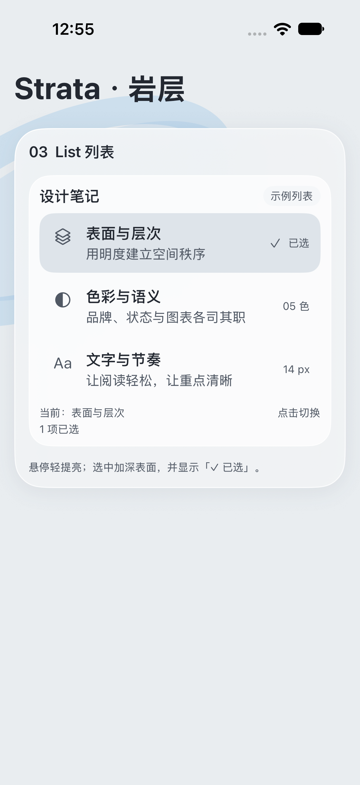
strata-blue · light · glass · large
124d60122f04419c3a29243d3122da18b24d51e111b28bf87550bcc327ef159e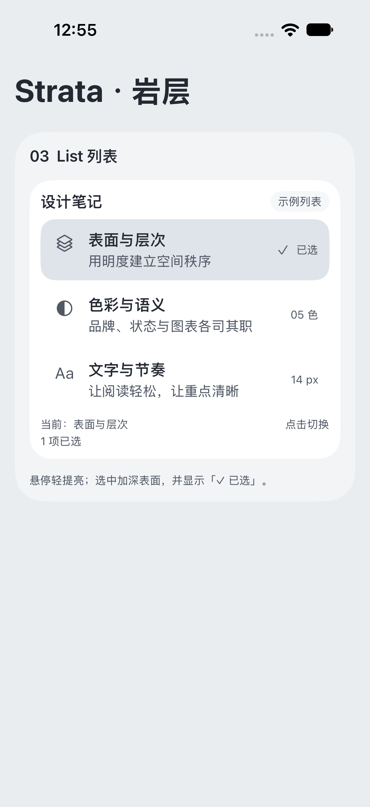
strata-blue · light · solid · large
1bced700b48f9c7076c5b9ba5db9c0bfee2962e6687c21a5b4e2639e60c27524
strata-blue · light · glass · large
1bced700b48f9c7076c5b9ba5db9c0bfee2962e6687c21a5b4e2639e60c27524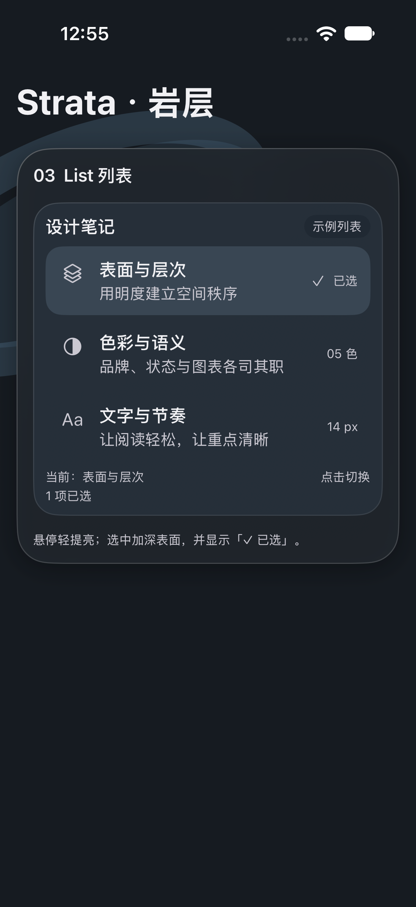
strata-blue · dark · glass · large
f96fbae624646c8918e30309b845b26ec7967dabcbf318d2f89bb292449aa5ef
strata-blue · dark · solid · large
ec2b8aa6c5d3ea75d99c965bfd2618c8191affd02fe664e32015fdd10049db4d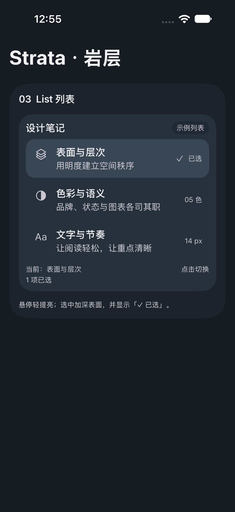
strata-blue · dark · glass · large
ec2b8aa6c5d3ea75d99c965bfd2618c8191affd02fe664e32015fdd10049db4d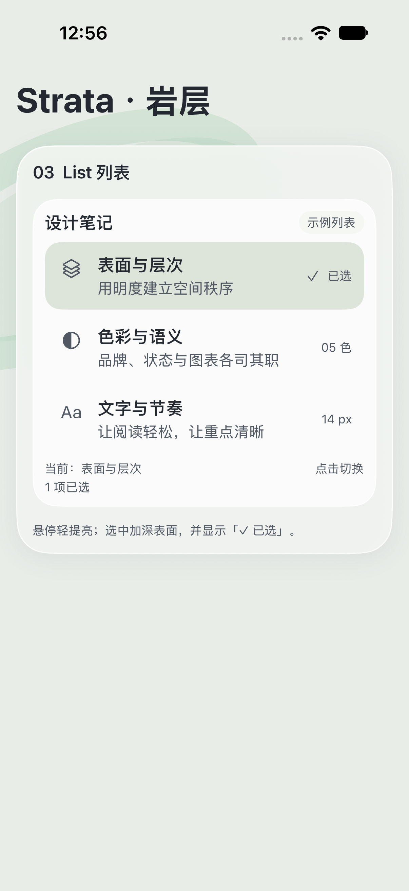
strata-green · light · glass · large
9fd596e82169a69176b3930be782072ddd96dd4d28e712f52b1673c951303524
strata-green · light · solid · large
9b9b67705ae19ad278621a4cf6c1ce1415cacd692b3b1586396fd0926b9b9edb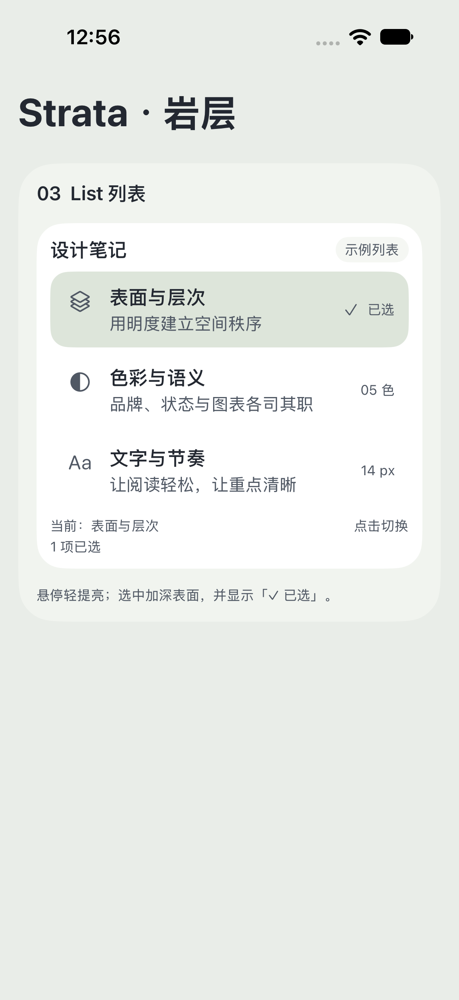
strata-green · light · glass · large
9b9b67705ae19ad278621a4cf6c1ce1415cacd692b3b1586396fd0926b9b9edb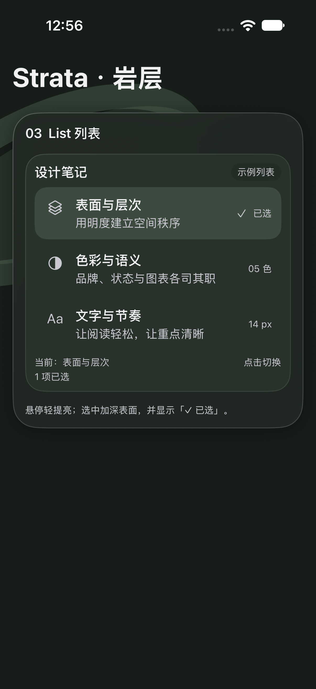
strata-green · dark · glass · large
2ae33a2ab8f7112fdb57a9d6d36bdc8ab3adcbd0521ae57663214ee0f5da8920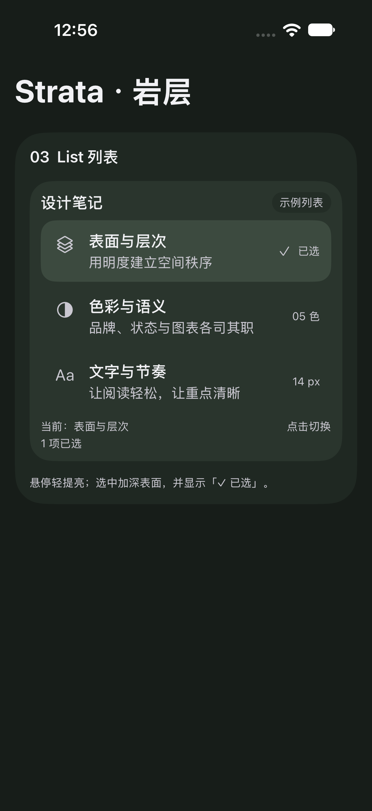
strata-green · dark · solid · large
c65ef3e85dce836b317d3e003517695a7c76a0904850f5be7f29108760e81fb0
strata-green · dark · glass · large
c65ef3e85dce836b317d3e003517695a7c76a0904850f5be7f29108760e81fb0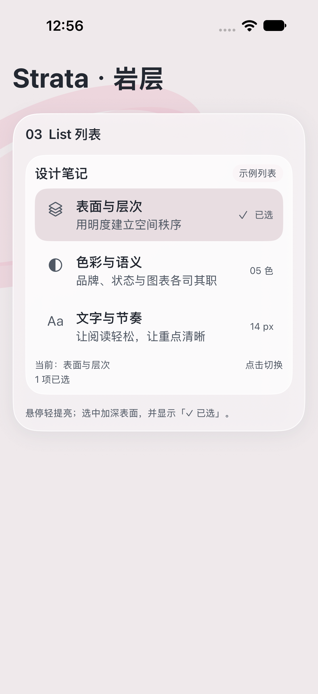
strata-pink · light · glass · large
258ed835b76c03110012fec290dcd8722d32e1a25ca0c8a0826b9541a4c504c9strata-pink · light · solid · large
c349d46421f641a088f41cc00462f4f6d4c90007035a2ad7c7f83808df1d7ae4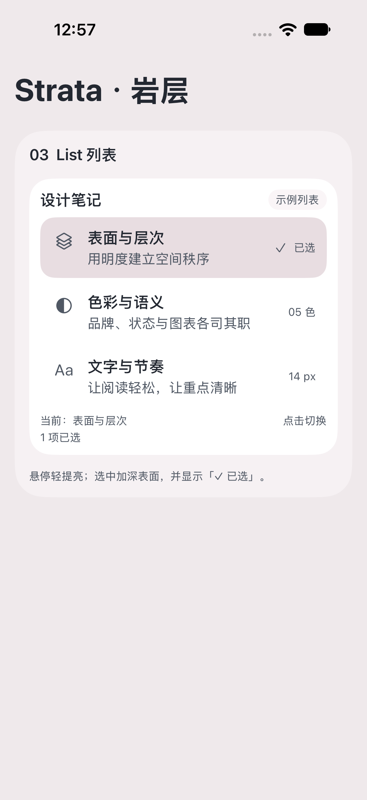
strata-pink · light · glass · large
5ab54b316d8eee174f577296fa8eb043ca29d4c8bd865697699bb5769d523cba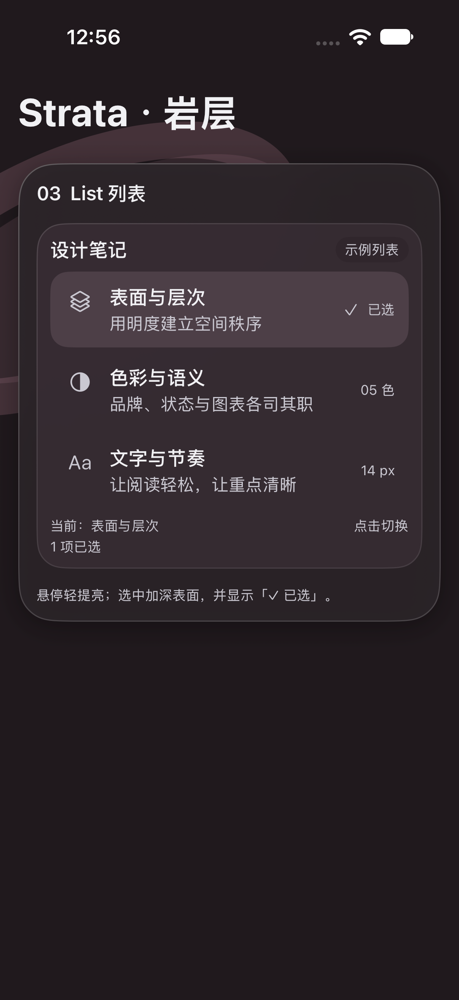
strata-pink · dark · glass · large
8a21adc49048d6e955022ddf90be4277ed6a5c6dc39962a51f89ba2f6c7de056
strata-pink · dark · solid · large
60c0b73aea3530e5b04943f0e23eec6f3ef45fb8485bfd32cbd72191e29036f8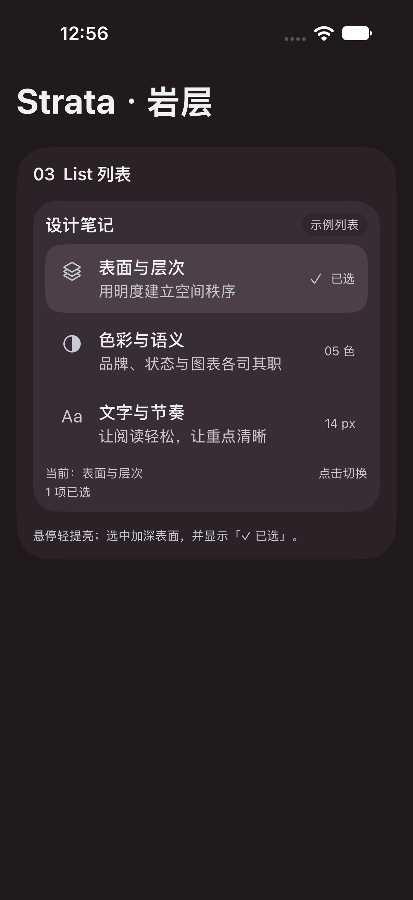
strata-pink · dark · glass · large
60c0b73aea3530e5b04943f0e23eec6f3ef45fb8485bfd32cbd72191e29036f8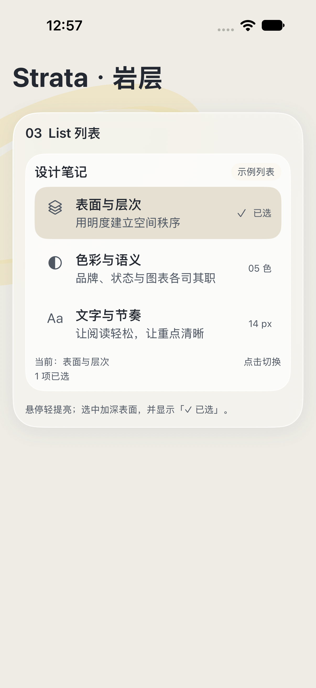
strata-yellow · light · glass · large
a2ac702027137d85edaa1c758f1711c301836b912aba8e928d92c23d026be6d8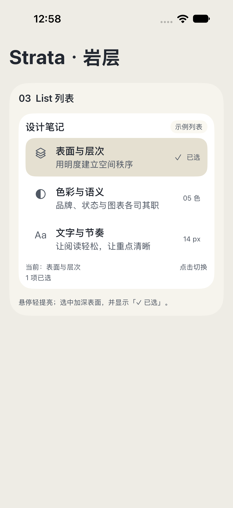
strata-yellow · light · solid · large
0b5875ccb6e5330f11d785d3cf5b06f051ca3331e87d594b94bcd414679ebe11
strata-yellow · light · glass · large
0b5875ccb6e5330f11d785d3cf5b06f051ca3331e87d594b94bcd414679ebe11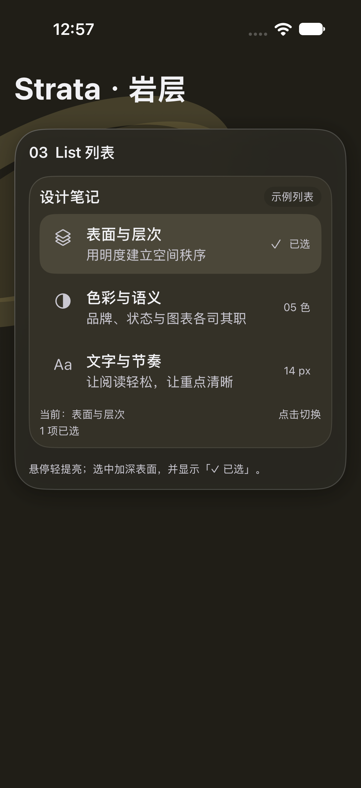
strata-yellow · dark · glass · large
5ade5e810aca4ea0f65e97ad20d64a1e4101268c0a0c3a00a3af40630c09aa28
strata-yellow · dark · solid · large
11128f532bb87ade2b79ab4aeb5b1800d26a98486adc5abb462cb893d9734681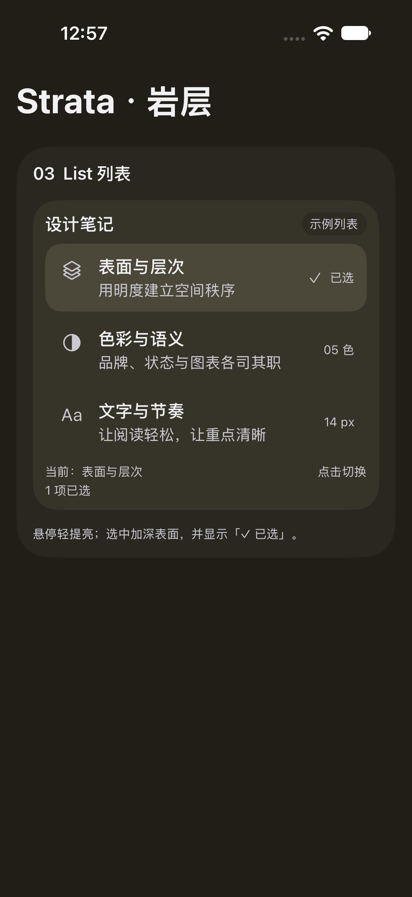
strata-yellow · dark · glass · large
11128f532bb87ade2b79ab4aeb5b1800d26a98486adc5abb462cb893d9734681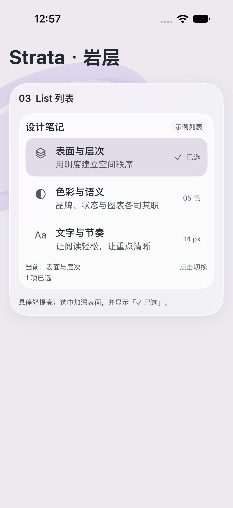
strata-purple · light · glass · large
aaa17476dd8e166ba29e2302ee12a9d91caa838609a4abf2c64604a27b2a15f1
strata-purple · light · solid · large
67d0a69a3bf54db33a8666849ad65f2c1939f6b9755b20df2f05ffeab5204c79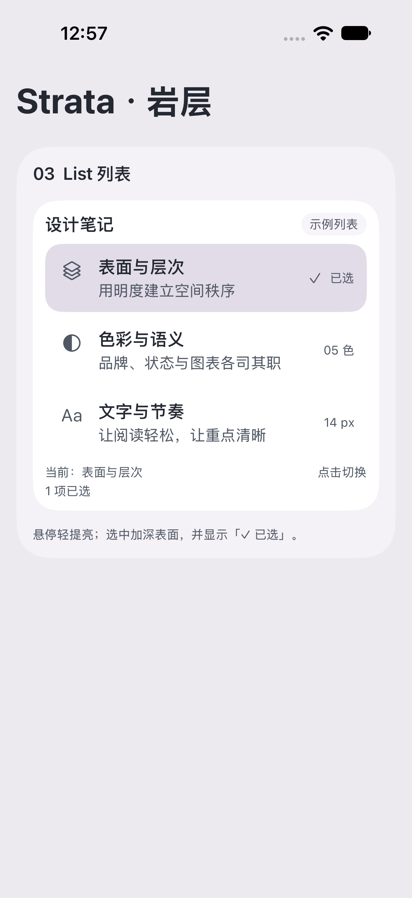
strata-purple · light · glass · large
67d0a69a3bf54db33a8666849ad65f2c1939f6b9755b20df2f05ffeab5204c79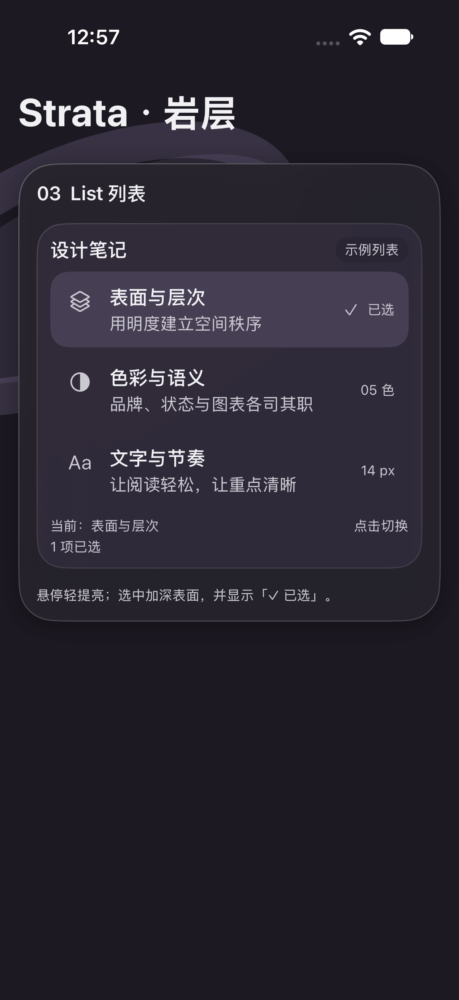
strata-purple · dark · glass · large
d42360a6349a69d2c17c0ae67b079a37dbd93dda02755e497d9fe8352246ce8e
strata-purple · dark · solid · large
6190ec94c0b533a338ff5bf5ae8c3a47e0ebdbf42560b3cc19f1950692aed037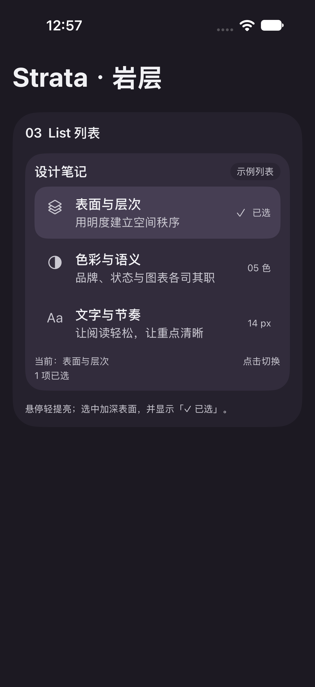
strata-purple · dark · glass · large
6190ec94c0b533a338ff5bf5ae8c3a47e0ebdbf42560b3cc19f1950692aed037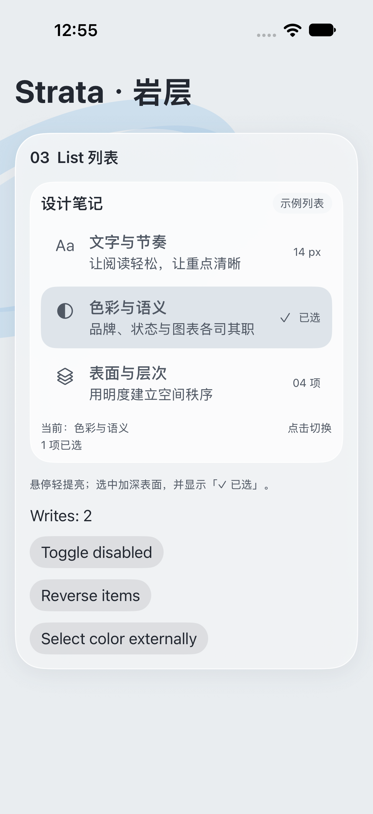
strata-blue · light · glass · large
6d718e7d99fb05ed1ca5ba5ab303740c9099c31565fd75e4f03722036777fc71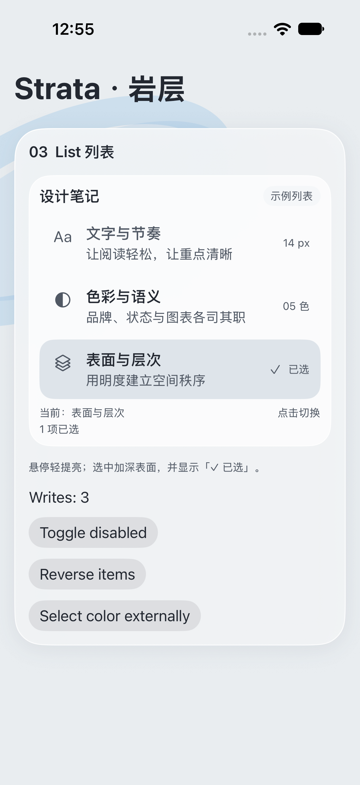
strata-blue · light · glass · large
3f943eccacce8dec642ae974413d94b0e4b9deb7ffb91cd7ecccff0c8a6e36ee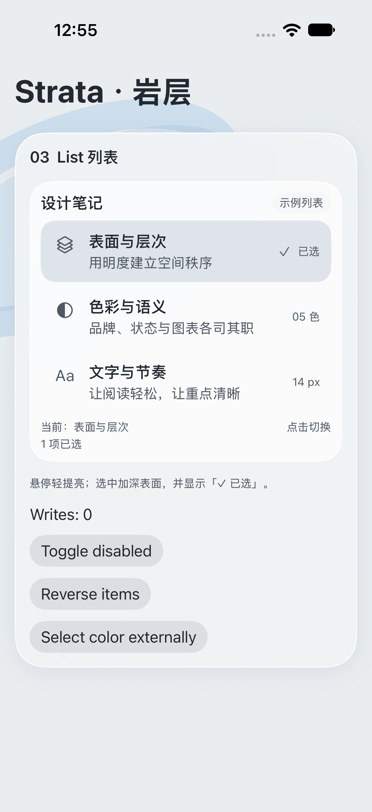
strata-blue · light · glass · large
b55e6e9e6f1dad58775a990379af13696556d21b3d8c6acf6571f1fb7a5d88cc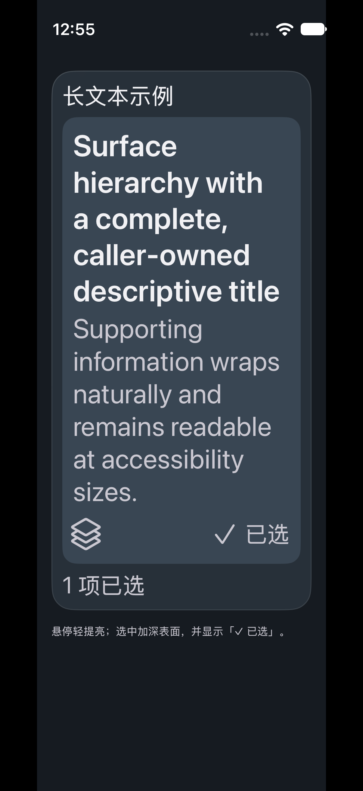
strata-blue · dark · glass · accessibility2
bd0ef66ac4589e3c89f59b31d448427abd3fda698bc5daf1141037caf2774c37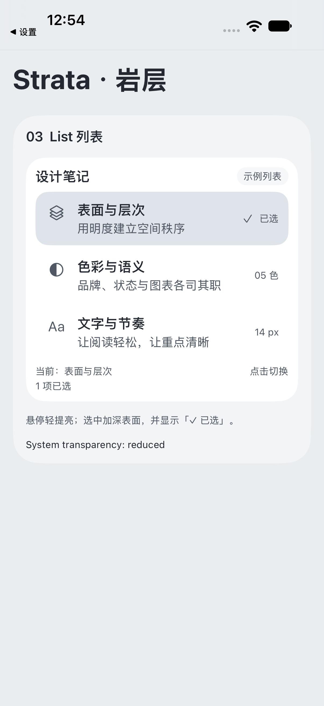
strata-blue · light · glass · large
502cc1cc69fc82b190afac7db5f58febebe85be0be9874655c90a3bb91c74f47